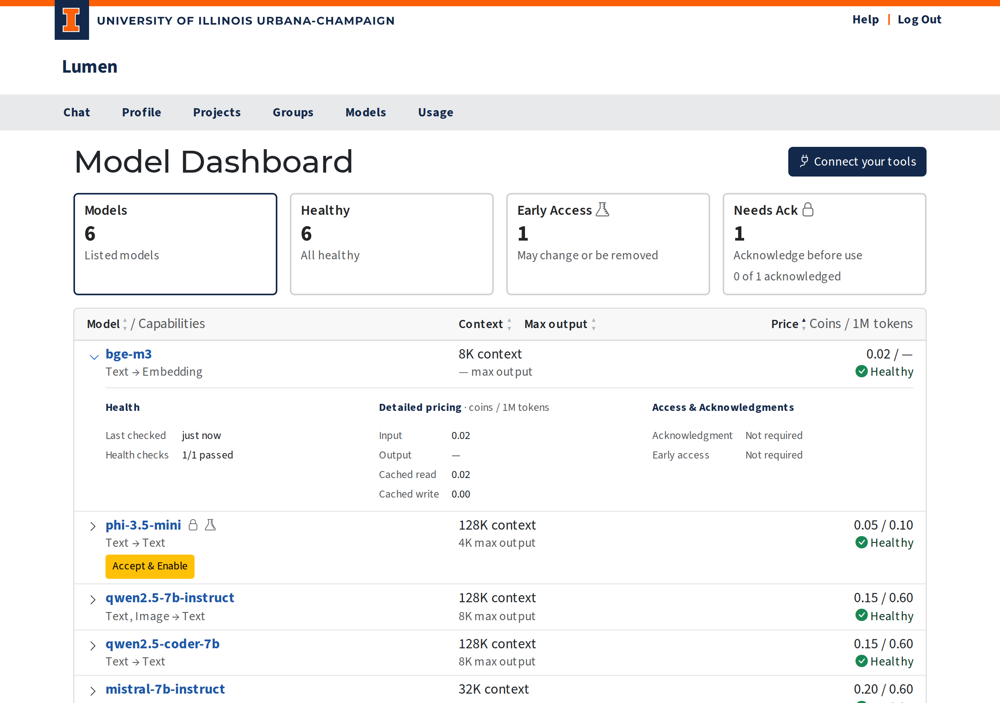

Models¶
The Model Dashboard (/models) shows every AI model available to you in your Lumen instance, with a summary of their health at the top and one compact row per model below. Models that are owned by another user are not listed, and their detail URLs return Not Found without exposing metadata. Disabled, expired, and deleted models are hidden the same way.

The Connect your tools button in the header takes you to the setup instructions for your coding tools and SDKs.
If a model you need is not listed, you can launch it yourself with LLMHub. If your administrator has configured an LLMHub link, it appears below the model list.
Summary Cards¶
Four cards at the top summarise the models listed for you:
| Card | Number | Subtitle |
|---|---|---|
| Models | Every model listed on the page, including models with no endpoints | "Listed models" |
| Healthy | Models that can serve requests right now: Healthy and Degraded models (at least one working backend) | The number of Down models, or of Degraded models when none is down, followed by the number of No endpoints models (e.g. "1 down · 2 no endpoints" or "1 degraded · 2 no endpoints"); "All healthy" when there are none of these |
| Early Access | Early-access models, which may change or be removed at any time | "May change or be removed" |
| Needs Ack | Models you still have to acknowledge before you can use them | "Acknowledge before use" with how many of the models that need acknowledging you have already accepted (e.g. "1 of 3 acknowledged"); "All 3 acknowledged" once you have accepted them all; "Nothing to acknowledge" when no model needs it |
The flask after Early Access and the lock after Needs Ack are the same icons the model rows show next to a name.
When the Healthy card's line of text is red, at least one model is Down; when it is yellow, none is down but some are Degraded. Models with No endpoints do not change the color, and the text is gray again when every model is healthy.
The cards are worked out when the page loads; reload the page to update them, for example after acknowledging a model.
Filtering¶
Click a card (or tab to it and press Enter or Space) to show only the models it counts. The active card has a darker border in the site theme's main color (dark blue on the Illinois theme); click Models to show every model again.
| Card | Shows |
|---|---|
| Models | Every model |
| Healthy | Healthy and Degraded models |
| Early Access | Early-access models |
| Needs Ack | Models you still have to acknowledge; models you have already accepted are left out |
The numbers on the cards always count every model, whichever card is active. If no model matches, the list reads "No models in this view."
The page address remembers the active card (for example /models?show=healthy), so reloading the page or sharing the link opens the same view. The values are healthy, early_access and needs_ack; without one, or with any other value, every model is shown.
Sorting¶
The buttons above the list sort it. Click a button (or tab to it and press Enter or Space) to sort by that column in the direction listed below; click it again to reverse the order. The list starts sorted by Model, A to Z, so clicking Model first reverses it to Z to A. A dark ▲ or ▼ in the site theme's main color marks the active sort: ▲ for low to high (or A to Z), ▼ for high to low.
| Button | Sorts by | When you switch to it |
|---|---|---|
| Model | Model name | A to Z |
| Context | Context window | Largest first |
| Max output | Most tokens per response | Largest first |
| Price | Input price, then output price | Cheapest first |
Price sorts by the input price; models with the same input price are ordered by their output price. A model with no context window or max output for the sorted column (shown as a dash) always comes last, in both directions, and models with equal values are listed by name. An embedding model's output price shows a dash but is 0, so it sorts as 0: first among models with the same input price when sorting cheapest first.
Sorting keeps the active card filter and an open row, which moves with its model. The page address remembers the order (for example /models?sort=price&dir=asc) next to the active card, so reloading or sharing the link shows the same order. The sort values are name, context, max_output and price, and dir is asc or desc; a sort without dir uses the direction listed above. Without sort, or with any other value, the list is sorted by name A to Z.
Model Rows¶
Each model is one row with three columns. Without opening it, a row shows:
- Model / Capabilities
- Name — links to the model detail page. A closed lock next to the name means you still have to acknowledge the model's terms before you can use it, and an open lock means you already have; a flask icon marks an early-access model.
- Modalities — what the model accepts and produces, as input → output (e.g.
Text, Image → Text). A dash means the instance hasn't published that information. - Acknowledgment button — a model with a pending requirement shows one button under its modalities: Acknowledge (yellow) when you still have to accept its terms, early access (blue) when you still have to accept early access, or Accept & Enable (yellow) when both are pending. The button opens the acknowledgment dialog without expanding the row.
- Context and Max output — the model's context window (e.g.
128K context) and, below it, the most tokens it can generate per response (e.g.8K max output). Round decimal values are shown in 1000-based units (128Kfor 128,000 tokens); everything else is 1024-based (128Kfor 131,072 tokens). A dash means the value is not set. - Coins / 1M tokens — the price per million input / output tokens (e.g.
1.00 / 2.00), with the model's health (see below) under it. An embedding model produces no output tokens, so its output price shows a dash (e.g.0.10 / —).
On a phone the token limits move under the model name, next to the price.
Health Labels¶
| Label | Meaning |
|---|---|
| Healthy (green check) | All backends are healthy — model is fully available |
| Degraded (yellow warning) | Some backends are down, but at least one is working |
| Down (red cross) | No backends are reachable — model is temporarily unavailable |
| No endpoints (grey) | No backends have been set up for this model |
The Healthy card counts Degraded models too, because they still answer requests; the row keeps the separate Degraded label so you can see the model is running with fewer backends.
Model Details¶
Click anywhere on a row (or tab to the arrow at its start and press Enter or Space) to open the model's details; clicking the model name still opens its detail page. Only one row is open at a time: opening another row closes the previous one. The details show:
- Health — Last checked: how long ago the most recent health check ran (e.g.
5 min. ago); hover over or tab to it for the full date and time. It updates every minute while the page is open. Never means no check has run yet. Health checks: how many of the model's backends passed their last check out of the total configured (e.g.2/4 passed). - Detailed pricing — coins per million tokens for Input, Output, Cached read and Cached write. A cache-read rate the model does not configure is billed at the input price and a cache-write rate at 0, so these always show what you are actually charged. An embedding model shows a dash (
—) for Output, because it produces no output tokens. - Access & Acknowledgments — see below.
Access & Acknowledgments¶
The last column of a model's details lists the two things a model can ask you to accept before you use it:
| Row | Shows |
|---|---|
| Acknowledgment | Not required when the model has no acknowledgment; an Acknowledge button until you accept its terms; then the date you accepted them (e.g. Nov 18, 2026) |
| Early access | Not required for a regular model; an early access button until you accept that the model may change or be removed at any time; then the date you accepted it |
Dates are shown in your own timezone. Hover over or tab to a date to see the full date and time.
Click the button in the row, or Acknowledge / early access in its details, to open the acknowledgment dialog, which shows every notice that applies to the model. Accept & Enable accepts all of them at once: it records your acceptance and reloads the page, so the rows show today's date and the Needs Ack card goes down. Cancel leaves the model unchanged. Each row keeps its own date, so a model you acknowledged earlier and accepted for early access later shows two different dates. If a model gains a new requirement after you accepted it, that row asks for acceptance again until you accept the new terms; the model counts under Needs Ack until every row shows a date or Not required. A model with an end date disappears from this page once the date passes.
Understanding Pricing¶
Coins are Lumen's internal currency. See the Introduction for a full explanation of how tokens and coins relate. The prices shown here are per million tokens — typical single messages cost a small fraction of that.
Prompt-cache reads and writes are priced separately when a model configures those rates. With no cache-read rate, cached tokens are charged the normal input price; with no cache-write rate, cache writes are free. The Detailed pricing section shows those figures.
Models with higher output rates tend to be more capable or larger. If you are cost-sensitive, compare models on the detail page before running a long batch job.